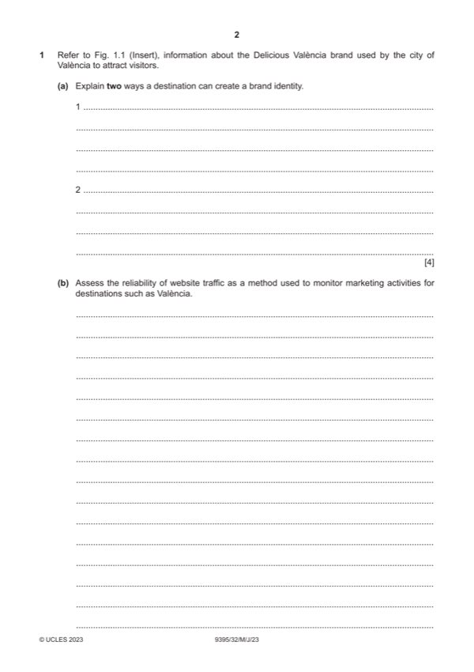

Question 1

Original paper page 2
Part 1(a) — solution
- Brand name (1) something catchy but which clearly identifies the name
- Slogan/tagline (1) some destinations like to reflect the characteristics of
- Logo (1) creating a strong visual identity (1)
- USP (1) identifying what makes a destination unique is a good way to
- Use of colour (1) within the logo, the slogan, staff uniforms at the
- Price (1) exclusive resorts such as Sandals use a luxury price tag to
- Distinctive packaging (1) build an association with the design of
- Corporate identity (1) staff uniforms, office décor, letterheads etc. (1)
Mark points
- Brand name (1) something catchy but which clearly identifies the name
- Slogan/tagline (1) some destinations like to reflect the characteristics of
- Logo (1) creating a strong visual identity (1)
- USP (1) identifying what makes a destination unique is a good way to
- Use of colour (1) within the logo, the slogan, staff uniforms at the
- Price (1) exclusive resorts such as Sandals use a luxury price tag to
- Distinctive packaging (1) build an association with the design of
- Corporate identity (1) staff uniforms, office décor, letterheads etc. (1)
Part 1(b) — solution
- Website traffic will show number of hits, usually via a counter at the
- Website traffic might give a rough measure of the popularity of the
- It is more difficult to measure global reach by monitoring website traffic
- or to understand more about where potential visitors originate from
- Other forms of monitoring are more reliable and effective in tracking the
Mark points
- Website traffic will show number of hits, usually via a counter at the
- Website traffic might give a rough measure of the popularity of the
- It is more difficult to measure global reach by monitoring website traffic
- or to understand more about where potential visitors originate from
- Other forms of monitoring are more reliable and effective in tracking the
Part 1(b) — solution
Level 3 (7–9 marks)
Candidates will show a clear understanding of the question and provide an
assessment of the reliability of website traffic in monitoring the success of
marketing efforts. Candidates effectively assess the reliability and clearly
attempt to weigh up the significance of website traffic. There is sound and
frequent evidence of thorough, detailed and accurate knowledge and
understanding of concepts and principles, using appropriate terminology
Level 2 (4–6 marks)
Candidates will show an understanding and provide an explanation of the
reliability of website traffic in monitoring the success of marketing efforts.
There may be some attempt to assess and some analytical language may
be used. The answer is relevant and shows reasonable knowledge and
understanding of specific marketing concepts and principles, with some use
of appropriate terminology.
Level 1 (1–3 marks) Candidates identify/describe up to three ways website
traffic data may be used. Information may be a list of points but explanations
are incomplete and arguments partial (if present). There is no attempt to
assess. The answer shows limited knowledge and understanding of specific
marketing concepts and principles with limited use of appropriate
terminology.
Level 0 (0 marks)
No content worthy of credit
Mark points
- Include the ideas shown in the solution above.
Part 1(c) — solution
- Costs – VVF is a public sector organisation and as such has a limited
- Global reach – some methods are restricted to the local area or the
- 24-hour marketing – we live in a technologically advanced society
Mark points
- Costs – VVF is a public sector organisation and as such has a limited
- Global reach – some methods are restricted to the local area or the
- 24-hour marketing – we live in a technologically advanced society
Part 1(c) — solution
- Lead times – producing marketing material takes time. Marketers at
- Options for personalisation – people are more likely to engage and
- Ability to track success – measuring success enables the marketers at
Mark points
- Lead times – producing marketing material takes time. Marketers at
- Options for personalisation – people are more likely to engage and
- Ability to track success – measuring success enables the marketers at